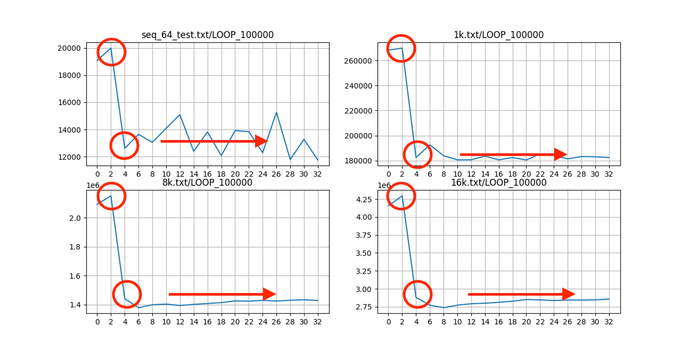
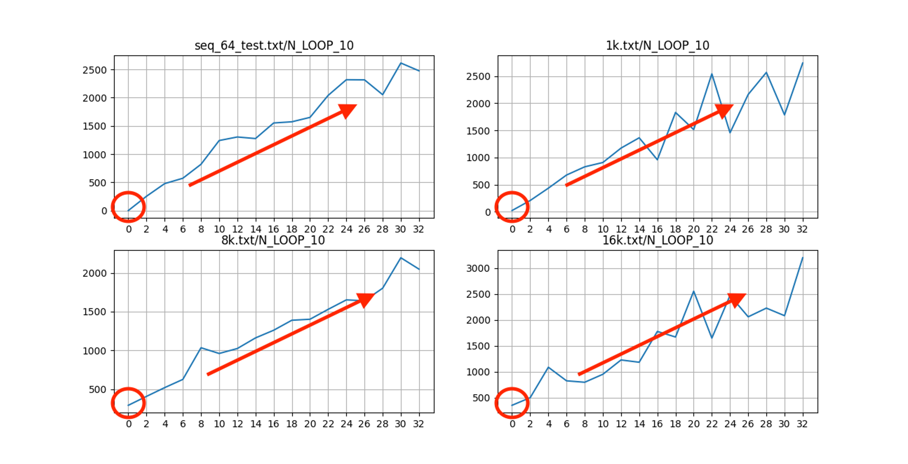
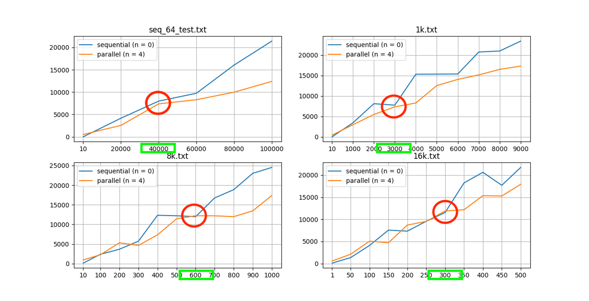
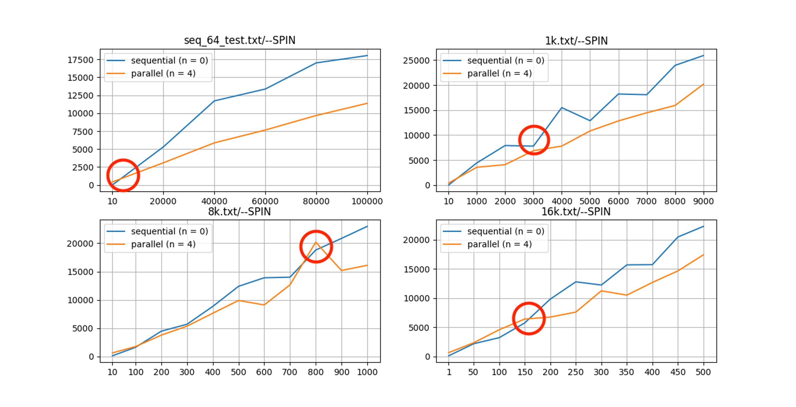
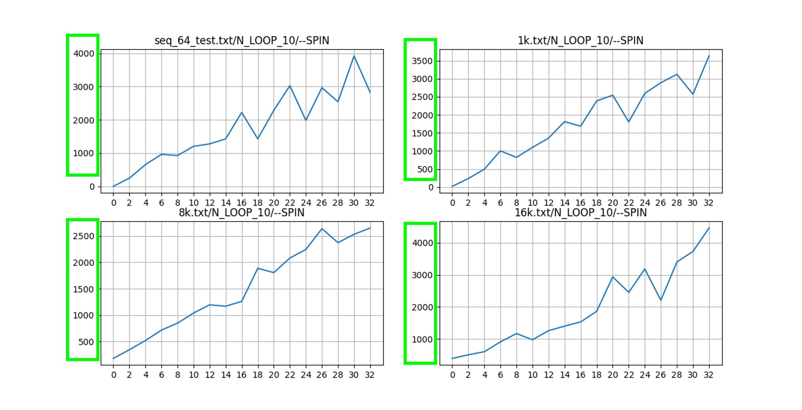

- Implemented base sequential version of work-efficient parallel prefix sum algorithm by C++
- Implemented parallel and barrier versions of work-efficient parallel prefix sum with POSIX thread (pthread) by C++
- Analyzed speedup among the all implantations with respect to the number of threads and data size
Data #
Abstract #
- I use Work Efficient Algorithm with building blocks style to compute prefix sum of large array. My work-efficient algorithm has O(log N) time and O(N) work.
Implementation Details for Work-Efficiency Algorithm #
-
I separate input data into same size blocks. (num_blocks = ceil(log2(N)))
-
I compute local prefix sums for these blocks in parallel. It has O(num_blocks) = O(log N) time, and O(num_blocks) * ceil(N / num_blocks) ~ O(N) work.
-
I store the last element of each blocks into an 2D array, and then I compute prefix sum of this 2D array in parallel, because this 2D array has very small size than input size, so I choose Hillis’s prefix sum algorithm to compute this 2D array in parallel. The main reason is in this step I do care about the time efficiency not the work efficiency in parallel, and this 2D array has very small size which is equal to the number of blocks, so here we should use work-inefficient algorithm which is Hillis’s prefix sum algorithm. It has O(log(N / num_blocks)) = O(log N) time, and O(N/num_blocks * log(N/num_blocks)) = O(n) work.
-
At last, add 2D array to each blocks in proper places in parallel. It also has O(num_blocks) = O(log N) time here, and also has O(num_blocks) * ceil(N / num_blocks) ~ O(N) work.
Analysis:
- Time: O(log N)
- Work: O(N)
Analyze Each Step #
Step 1 #

- The above graph can show my program performance when setting LOOP to 100000 on different thread numbers. From the graph, we can see there are two inflection points on each subgraph. The first inflection point is on 2 threads because my work-efficient algorithm after averaging on each thread has additional parallel computing operations on my part 2 implementation (see page 1) than the sequential algorithm. The second inflection point is on 4 threads because my laptop CPU has 4 cores, and thus my program can perform best when setting to 4 threads and each core doesn’t need to switch to another thread, and this can save overhead on context switching. And with more than 4 threads, the performance of my program decreased, I think the main reason is that there is more overhead when switching threads and that might cause the performance doesn’t improve even decrease. If I setting 4 threads, each core of my 4 core CPU can get only one thread without switching to other threads.
Step 2 #

- Here, I set my LOOP to 10 and all other arguments keep the same as step1. We decrease the time of each addition operation, and thus our sequential algorithm can get the fastest result. The main reason is that our CPU can solve the problem very fast in sequential as the professor mentioned in the lecture. The decreased amount of time on each addition operation also indicates that the amount of time cost on each thread decreased, and thus more threads will result in more context switch frequency, and thus this will have more overhead than the sequential algorithm. This is the main reason when the addition operation becoming very fast, our parallel algorithm performance can’t beat the sequential algorithm. Another reason is that our parallel algorithm has more addition operation than sequential algorithm after averaging for each thread as I mentioned on page 1 of my implementation details. This also leads to a performance decrease. The above two reasons can explain why the sequential algorithm is the fastest and why the trend is like this.

- The above graph shows that when setting THREAD number argument to 0 and 4 (0 means sequential algorithm, 4 is because my laptop can get the best performance when threads number is 4), after setting the THREAD argument and changing the LOOP argument to test our program performance. We can see there is an inflection point on each subplot in the red circle because increasing the LOOP argument causes the amount of work on each thread to increase and thus the parallel performance can take advantage of the different workers work at the same time and that meet the performance with the sequential algorithm at the red circle on the graph. We also notice that by increasing the input size from 64 to 8k, our inflection point moves to the left as indicated in the green box on the graph. The reason is that increasing the numbers of input values, increases the addition operation to both algorithms and this has the same effect as increasing the LOOP. Thus with these two main factors, increasing the LOOP and increasing the input size, can explain why inflection points in these subgraphs of the second graph can meet earlier and earlier, and cause the trend like above.
Step 3 #
 
-
Here, I used my own re-entrant barrier to plot the same graph as before in Step 2. My barrier is implemented with conditional variable and mutex lock. Each thread will wait and try to unlock the barrier in the queue, and once all threads get the signal, the program will go further to the next step.
-
Spinlock is different from the mutex lock. As the professor said, spinlock causes the thread to keep rolling the lock to try to find out whether the stuff is unlocked or opened all the time. This will constantly cost CPU resources, and if the thread is locked for a long time, spinlock will keep trying to get the control and cause a lot more CPU resources waste.
-
In the scenarios of the small amount of work in each thread, the spinlock can be better, because spinlock will not waste much CPU time on waiting for the other threads to unlock. It might also boost some performance by trying to get control from those short lifetime threads. And thus in the contrast, in the scenario of a large amount of work in each thread, which means the mutex is better, because in this long waiting time scenarios if some thread wants to unlock and it will wait in a queue instead of waste CPU resources, and won’t constantly cost CPU time.
-
In addition, a multi-core scenario also can get benefit from the spinlock. When the critical section is small and multi-core environment can reduce the context switch time and that can take advantage of the spinlock.
-
The main drawback of the spinlock is that it will cost a lot amount of CPU time when the critical section was held for a long time in some thread, and the spinlock will keep trying to unlock the thread, which will waste the CPU resources.
-
The main drawback of the mutex is that if our program only has a small workload to deal with for each thread, then mutex is very inefficient. Because each thread will go sleep allow another thread to run, however, if the thread has a short lifespan, then the context switching will let the mutex become very inefficient.
-
From the above two graphs compared to Step 2, we can see that my own barrier can’t get better performance than the Pthread barrier. From the first graph, we can see the inflection point meets later than the traditional Pthread barrier in Step 2. And from the second graph, we can compare to the average cost time of the program, the green box, indicating that our barrier is getting slower than the Pthread barrier but not that much, it only got 1000 ms average worse. But basically, the results are in line with my expectation, because the logic behind the Phtread is similar to mine. The main reason that my barrier is slightly inefficient is that I let my barrier spin a little bit to try to unlock the thread, which would cost some CPU time, and that will cause worse performance.
-
I suggest using my own spinlock barrier to some tasks or some scenarios that have some small subtasks that only have a short lifespan, and the rest of the tasks has a large workload. In this scenario, my barrier will work better. Otherwise, if the tasks are all with a large workload, then I suggest using the Pthread barrier instead because it doesn’t waste any time on trying to unlock, it will go to sleep and wait in a queue and let other threads use the resources.